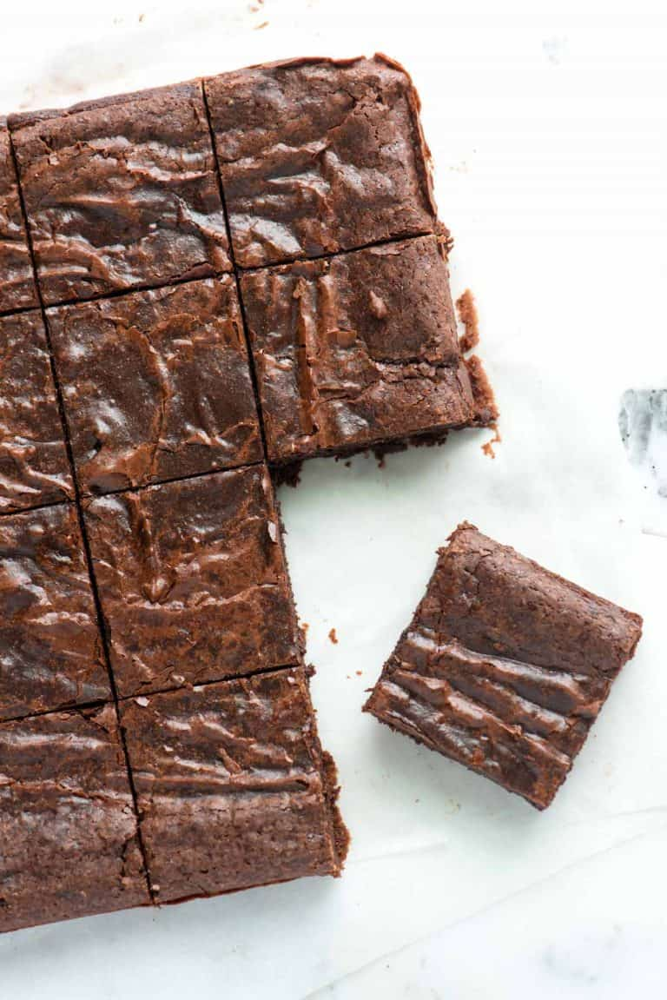

Brownie!

Some tasty brownies to end off!
Finally, we end off with some wonderful and easy to make fudge brownies. These will go great as a dessert option. This is a great add-on to your pizza and coke combination!
Ingredients:
- Butter
- Sugar
- Cocoa powder
- Eggs
- Salt and vanilla
- All-purpose flour
Steps:
- Melt the butter with sugar, salt, and cocoa powder. Here is where the saucepan comes into play. Make something called a double boiler, a fancy term for a small saucepan filled with an inch or two of water set over low heat. I place a bowl with the butter, sugar, and cocoa powder over the saucepan and watch as they melt into a gritty-looking mixture.
- Add the vanilla and eggs. We use two eggs to make the brownies, but I add them one at a time. I add the first egg and mix it into the butter, sugar, and cocoa powder. When the first egg is mixed in, I repeat with the second egg.
- Add the flour. After mixing the flour into the batter, I beat the batter with a spoon for 40 to 50 strokes. The batter will be thick. This extra beating makes sure that the butter emulsifies into the batter, which makes sure the brownies bake perfectly in the oven. I usually tell you to be careful not to over-mix batters on this blog, but that’s not the case with these simple brownies.
- Bake them. The brownies bake in the oven for 20 to 25 minutes. I’ve dedicated a whole section below telling you how I tell when brownies are ready to be pulled out of the oven, because nobody wants an overbaked brownie, right?